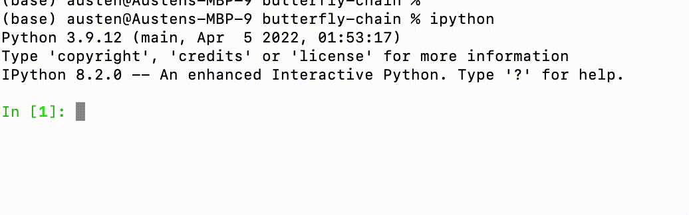

print("Hello world!")
1 + 2Hello world!3Everyone finds their own workflow for coding, depending on their preferred language, editor, how they run their code, and so on. The aim of the sections below is to give a roundup of some popular tools in the Python ecosystem.
To run Python code on your computer you will need to have installed the Python language. I recommend the Anaconda distribution as it comes with all the parts of the toolkit we’ll need such as Jupyter notebooks and the major libraries NumPy and SciPy.
Try running python at the command line. You should get something like
Python 3.12.7 | packaged by Anaconda, Inc. | (main, Oct 4 2024, 08:28:27) [Clang 14.0.6 ] on darwin
Type "help", "copyright", "credits" or "license" for more information.
>>> You should confirm that you are using Python 3 (the command python3 will also work and guarantee this if you happen to have Python 2 as the default). The prompt >>> indicates that you have started the Python interactive shell or REPL and are good to go:
print("Hello world!")
1 + 2Hello world!3To leave and return to the command line, you can run quit() or exit().
If you ran the above command from within python you may have noticed that the nice colour scheme that you see above was absent. This is called syntax highlighting and provides a visual guide to the syntax of the language.
IPython is an interactive shell that provides syntax highlighting and much more. If you have installed IPython (it comes with Anaconda) you can start it from the command line with ipython.
Among the most helpful features of IPython are:
tab to autocomplete. This is particularly useful for viewing all properties or methods of an object: ?obj or obj? prints detailed information about the object obj (?? provides additional detail).% that provide certain additional functionality. For example, %timeit finds the executation time of a single line statement, which is useful when profiling the performance of code:%timeit L = [n ** 2 for n in range(1000)]65.1 μs ± 4.66 μs per loop (mean ± std. dev. of 7 runs, 10,000 loops each)%timeit automatically runs several times to give some statistics on the execution time. For multiple lines you can use the %%timeit magic.
You can find much more exploring the documentation.
Python code in a file with a .py extension can be run from the command line with python hello_world.py or python -m hello_world. In the latter case the -m option tells the interpreter to look for a module called hello_world. More on modules below.
From the IPython shell you can instead use run hello_world.py or just run hello_world.
A Python module is just a file containing definition and statements. Breaking long code into modules is good practice for writing clear and reusable software. Users may not want to delve into the details of some function you have written in order to be able to us it, and separating the corresponding code into a separate file is a hygienic way to handle this.
Thus if I make the file hello_world.py containing the function:
def hello():
print("Hello world!")I can run this function by first importing the module:
import hello_world
hello_world.hello()Hello world!Notice that the function hello is accessed from the hello_world namespace. This is to avoid any confusion that may arise if more that one imported module has a function of the same name. If you are confident that’s not an issue and want more concise code you can do this:
from hello_world import hello
hello()Hello world!or even import everything with the wildcard *:
from hello_world import *
hello()Hello world!The issue with the latter is that it may introduce a whole bunch of names that may interfere with things you already defined.
A collection of modules in a folder is called a package. You can import a package in the same way and access all the modules using the same . notation i.e. package.module1, package.module2, etc..
Since explicit namespaces are preferred to avoid ambiguity it’s common to introduce shorthand names for the package or module you are importing, hence the ubiquitous:
import numpy as np
np.arange(10)array([0, 1, 2, 3, 4, 5, 6, 7, 8, 9])(You can call it what you like, of course!)
Full details about where the interpreter looks to find modules you try to import are in the documentation.
99% of the code 1 you run will have been written by somebody else in the form of a library (a collection of modules or packages). Package installation is handled by the command line utilities pip or conda, the latter being the package manager for the Anaconda distribution. If you have NumPy and SciPy installed you won’t need to worry about this too much in this course.
Modern editors come with a huge number of tools that make writing code much easier, and you would be crazy not to take advantage of them. These range from the visual cues provided by syntax highlighting – which we’ve already met – to code completion, parameter information and documentation popups as you type. These go under the general heading IntelliSense. The next stage of evolution is AI code assistants like GitHub Copilot. In my view, these are all part of a continuum of productivity enhancements that enable people to write better code faster. Use them (wisely).
I use Visual Studio Code.
While software developers write .py files, modules and packages, scientists and others doing more exploratory work tend to favour a Notebook format that mixes code, text, and plots. The dominant option is the Jupyter notebook, which comes with the Anaconda distribution and can be started from the command line with jupyter notebook (or from the Anaconda Navigator application). This will open the notebook as a web page in your browser, where it can be edited and saved. The default extension is .ipynb.
Jupyter notebooks can actually run code in different languages (the processes running a particular language is called a kernel), but the default process is IPython with all the benefits described above.
The text cells can be formatted using Markdown and also support \(\LaTeX\) equations, which is pretty handy for us.
Google has their own cloud version of the Jupyter notebook called Colab. You can try it out for free, though you have to pay for significant compute. The “next generation” of the Jupyter notebook is called JupyterLab and can be started with jupyter lab. Notebook files can be opened in either JupyterLab or Jupyter Notebook
This is a conservative estimate↩︎